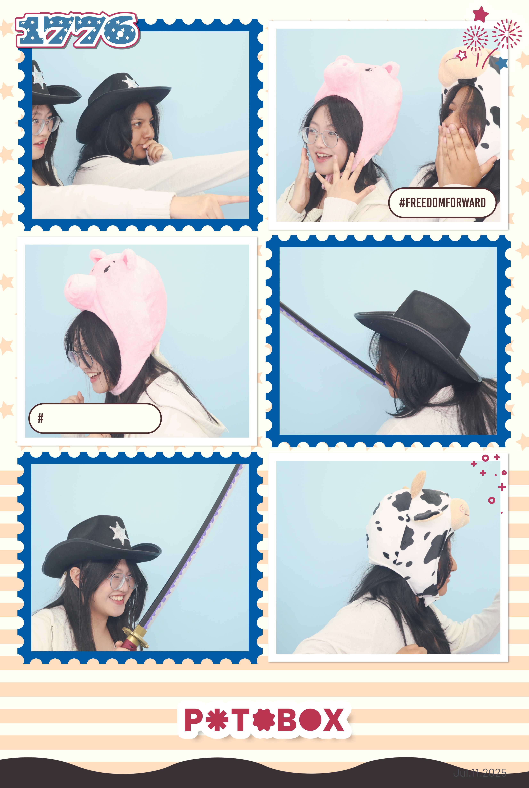
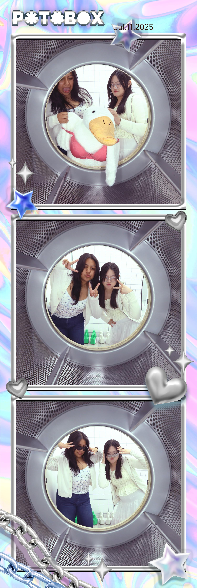
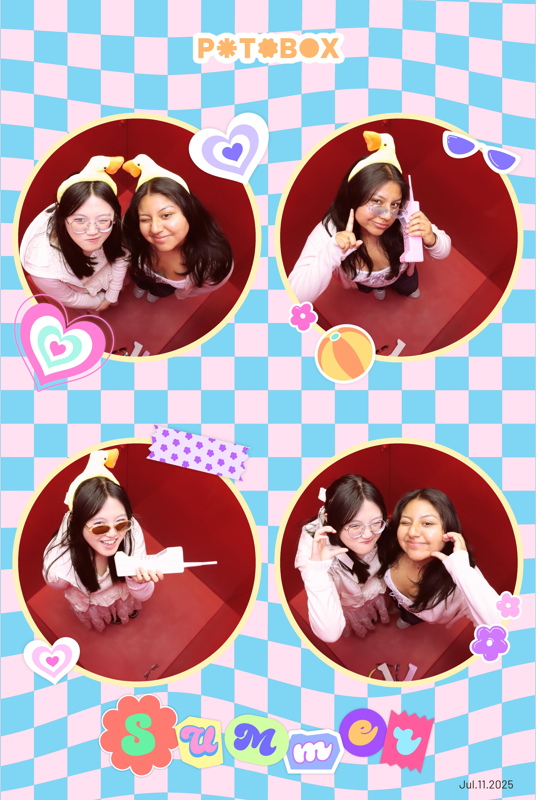

Moments with them <3
I have lots and lots of pictures with my friends, but all of these were taken at photobooths which also records the videos ANDDDD takes the pictures, which then makes it really memorable!
All those above, we taken with nancy when I went and met up with her on a solo hang out, which we role-played different things for those images! The final pictures did come out really funny ^_^



Moving on with my other friends in the group... Click to Flip the Page!